新手教學簡報
英雄聯盟新手入門
給完全沒玩過的人：這是什麼遊戲、怎樣算贏、隊伍裡五個位置各做什麼、開局前要做哪些準備。
內容全部取自本專案的 LLM Wiki，每張右下角標示對應頁。← → 鍵翻頁。
基礎 這是什麼遊戲
《英雄聯盟》是一款 MOBA ：多人線上戰鬥競技場，兩隊各自操作角色，目標是摧毀對方基地。
最常見的玩法：在 召喚峽谷 Summoner's Rift 地圖上 5 對 5 對戰。
每位玩家操作一位 英雄 Champion ；可選英雄超過 140 位。
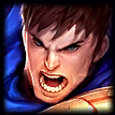
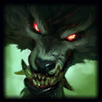
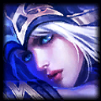
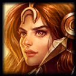
VS
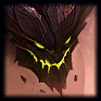
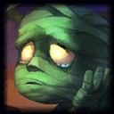
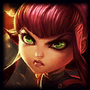
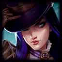
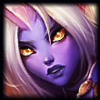
基礎 怎樣算贏：摧毀對方主堡
每隊基地中心有一座 主堡 Nexus ，先被摧毀的一方輸。
主堡受到 防禦塔 Turret 與 水晶兵營 Inhibitor 保護。
所以要沿著 路線 Lane 一座一座推進。
防禦塔 ×3 水晶兵營 主堡 我方
推進方向：塔 → 兵營 → 主堡
基礎 地圖：三條路線與野區
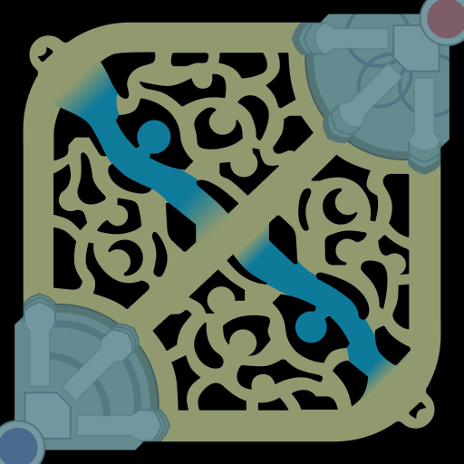
上路
中路
下路
河道
野區
野區
藍方基地
紅方基地
兩隊基地在地圖對角（藍方 左下、紅方右上），由三條路線連接；打通任一條就能抵達敵方主堡。
上路 、中路 、下路 ：上方、中央、下方三條路。路線之間是 野區 ，有不屬於任何一方的 野怪 ；河道 斜穿中央，把野區分成兩半。
主堡後方的 召喚平台 可快速回復，並使用 商店 。
基礎 經驗值與金錢
經驗值
怎麼拿：擊殺敵方單位與英雄、助攻 、推塔
做什麼：累積後 升級 ，解鎖或強化技能、提升基礎能力
金錢
怎麼拿：擊殺敵方單位、野怪與英雄，推塔
做什麼：在商店購買 裝備
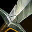
擊殺敵方英雄不會直接獲勝，但能取得經驗與金錢。經驗與金錢領先的一方英雄更強，較容易贏下戰鬥並推進。
基礎 士兵與兵線
士兵 Minion 由雙方主堡自動生成，沿三條路線前進，攻擊遇到的敵人。第一波約在開局 30 秒出現，之後約每 30 秒一波。
一群一起前進的士兵叫 兵線 ：近戰兵、遠程兵，定期加入砲車兵。
摧毀敵方某路的水晶兵營後，我方那條路會出現更強的 超級士兵 。
在士兵附近攻擊敵方英雄，敵方士兵會轉而攻擊你。
近戰 遠程 砲車
基礎 補兵：最後一擊才拿錢
補兵 last hit ：對士兵打出最後一擊的人才拿到金錢。補到的士兵數叫 CS Creep Score 。
一波士兵約值 115–150 金，是最主要的金錢來源之一。
經驗值不需要最後一擊：士兵死亡時，附近的敵方英雄平分經驗。
士兵血量只剩一點
最後一下 → +金錢
站在附近 → +經驗（不論誰打死）
基礎 英雄的技能與按鍵
被動技能 ：自動生效。三個 基礎技能 ＋一個 大絕 （最強的技能），用 Q、W、E、R 鍵施放。
另外攜帶兩個 召喚師技能 ，預設 D、F 鍵。
常用：閃現 、傳送 、重擊 、點燃 ；新帳號就有 鬼步 、治療 。
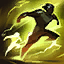
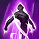
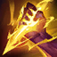
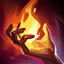
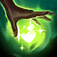
位置 五個位置
輔助 與射手一起在下路視野 （看得到敵人的範圍）
接下來五張逐一說明。
位置 1／5 上路
上方單人路線，離隊友最遠，要能自給自足。
開局的 對線期 ：與對手 換血 （互相消耗血量）並補兵。
後期可 分推 ：在側路單獨推進，再用傳送回到 團戰 。
常見英雄：鬥士 、坦克 ；常帶閃現＋傳送或點燃。
路線任務 （26.1）：完成後等級上限提高、經驗獲取增加。
位置 2／5 打野
在野區移動，經驗與金錢主要來自野怪；必帶重擊 ，開局選一隻會成長的 打野寵物 。
工作一：拿 史詩野怪 （擊殺後給整隊增益的大型野怪，第 23 張說明）。
工作二：抓人 gank ，從野區突襲某條路的敵人。
工作三：控制河道與野區的視野。
建議 需要理解整張地圖，新手最後再學。
位置 3／5 中路
地圖中央的單人路線，三條路中最短。
對線補兵；位置居中，可 遊走 （離開自己的路去支援別路）。
常見英雄：法師 、刺客 ，通常有高爆發傷害，團戰負責主要輸出。
路線任務（26.1）：鞋子 （提升移動速度的道具）免費升一級，並定期獲得強化 回城 。
位置 4／5 下路（射手）
下方路線，由射手和輔助兩人共用。
對線期專心補兵；射手依賴裝備，後期成為主要的持續輸出。
射手用普通攻擊從遠距離輸出，但非常脆弱，團戰要站在隊友後方。
路線任務（26.1）：完成後得額外金錢，鞋子移到任務欄，等於多一格道具欄。
位置 5／5 輔助
和射手一起在下路；通常不補兵，把錢讓給射手，改用專屬 輔助道具 賺錢。
前期保護射手，之後支援全隊。
主要職責：控制全地圖的視野。
常見英雄：控制者 、坦克。
建議 不需要補兵，適合新手第一個學。
選角 選角流程
1 宣告 約 15 秒
2 禁用 30 秒，雙方同時
3 揭曉 5 秒
4 輪流選角 1-2-2-2-2-1，每輪 30 秒
5 確認 30 秒
全程約 4 分 20 秒
禁用 ：每人禁一位英雄，被禁的英雄這場沒人能用。藍方先選 1 位，之後雙方輪流各選 2 位；點選只是宣告，按 鎖定 才算數。
時間內沒鎖定或中途關閉遊戲 → 選角解散，並受 逃跑 懲罰。
確認階段：隊友可交換英雄，並完成開局前的設定（第 19 張）。
選角 怎麼挑英雄（一）：角色類型
類型 擅長 弱點 範例 坦克 承受傷害、干擾敵人、開團 輸出低 鬥士 耐打的近戰持續輸出 射程短 法師 用技能造成大量傷害 被近身後脆弱 射手 遠距離普通攻擊的穩定輸出 非常脆弱，依賴裝備 刺客 快速切入擊殺單一目標 脆弱 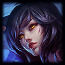
控制者 保護隊友、控場 （限制敵人行動） 本身傷害低
選角 怎麼挑英雄（二）：陣容搭配各類型互有強弱，沒有一類全面壓制，所以一隊要混合不同類型。簡單檢查三件事：
各位置常見類型：上路 鬥士／坦克；打野 鬥士／刺客／坦克；中路 法師／刺客；下路 射手；輔助 控制者／坦克。
選角 新手推薦英雄建議 挑選標準：需要瞄準的技能少、容錯高、任務明確。
上路 蓋倫 墨菲特 打野 沃維克 阿姆姆 中路 安妮 拉克絲 下路 艾希 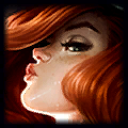
好運姐 凱特琳 輔助 雷歐娜 索拉卡 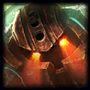
納帝魯斯
選角 符文與召喚師技能
符文 ：開局前選好的額外效果。一頁＝主系 （一個 基石符文 ＋三個）＋副系 （兩個）＋三格屬性碎片。
新手做法：直接套用選角畫面的 推薦符文 ；帳號等級 10 以下也不能自己編輯。
位置 召喚師技能 打野 必帶重擊 上路 或 其他 閃現＋另一個；推薦功能可一併建議
出裝 道具欄與分級
六格道具＋一格 飾品 ，共七格；在基地商店用金錢購買。
道具的組合與順序叫 出裝 build 。
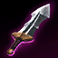
起手道具 開局買的便宜道具，多數不能合成 基礎道具 單一屬性的合成材料 史詩道具 屬性較高的合成材料 傳說道具 合成後效果最強；同一種只能帶一個
合成範例
長劍
↓
吸血鬼權杖
↓ ＋其他零件
殞落王者之劍
出裝 怎麼買
傳說道具由零件合成，錢不夠時可以先買零件，之後再合成。
鞋子只能裝一雙，分三階。
消耗品 ：用掉就沒有的道具，例如生命藥水（回血）。建議 依對方的傷害類型調整，不要每場出同一套。26.1 路線任務：中路可免費升級鞋子，下路的鞋子移到任務欄。
→ 鞋子 → 第二階（例：狂戰士護脛）
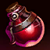
生命藥水
對局 視野與守衛
沒有我方單位的地方被 戰爭迷霧 遮住，看不到敵人。
守衛 Ward ，俗稱「眼」，放下後驅散周圍迷霧。
名稱 取得 特性 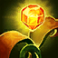
潛行守衛 預設飾品 隱形，約 150 秒後消失，最多 3 個 控域守衛 商店購買 不會消失，限 1 個；讓附近敵方守衛失效 先知透視鏡 飾品 清除附近隱形守衛 鷹眼晶球 飾品 可遠距離放置的守衛
對局 中立資源：史詩野怪
巴龍納什
野區最強；全隊增強、附近士兵大幅變強（26.1 起約 20 分鐘出現）
主要由打野負責，但通常需要隊友一起；守衛放在附近可提早發現敵人。
對局 新手常見錯誤建議
追擊敵人進入戰爭迷霧：對方隊友可能在等著。
漏補兵：補兵是主要金錢來源。
不看 小地圖 ：不知道敵方打野在哪。
每場出同一套裝。
沒有目的地打架：戰鬥應圍繞飛龍、巴龍或防禦塔。
不插守衛：沒有視野就容易被偷襲。
對局 練習路線建議
先專精一位英雄，約 20 場。
一次只練一項基本功，照上面的順序。
位置建議從輔助開始，打野最後學。
附錄 資料來源與聲明
內容：本專案 Wiki，彙整 11 份來源（官方 3、官方授權 wiki 7、第三方 1）。
圖片：Riot Data Dragon 官方圖檔（英雄原畫與圖示、道具、技能、符文、小地圖）。
流程與檢查紀錄：Wiki 的 log 頁。
lol-beginner-wiki was created under Riot Games' "Legal Jibber Jabber" policy using assets owned by Riot Games. Riot Games does not endorse or sponsor this project.
← →


 控域守衛
控域守衛